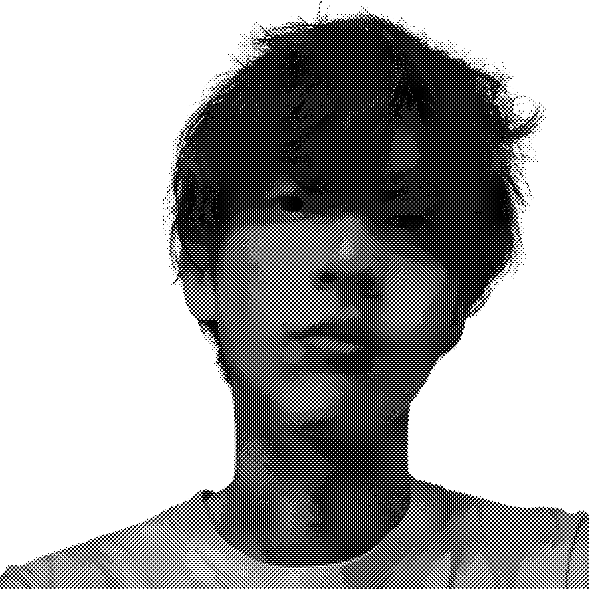

I studied Interdisciplinary computing and the arts major in the UCSD. I used to be a new media artist from Shenzhen, China. Through emerging technology as a medium, I always created generative, interactive, and experimental artwork. (Computational artist exploring tensions between ecology, technology, science and spirituality; Studying intelligence in nature, intelligence in machines, perception, consciousness, neuroscience, physics and (philosophies of) spirituality, ritual and religion; AI wrangler; curious philomath; Speculative Simulations & Data Dramatizations;)
I am now an DIGITIAL PRODUCT DESIGNER specializing in UI/UX, currently studying Information Science, UX Reseach and Design track, at University of Michigan, Ann Arbor. I am an initiative & reliable designer with internal aesthetics feeling. Driven by creating delightful user experience, I makes simple, elegant, yet bold designs. I believe that a good designer is a researcher. A researcher always dives deeply into a subject, taking field notes, collecting unique insights in order to eventually fall in love with what he or she wanted to learn. An explorative designer is able to break down visual patterns in any area of life and make everyone look at familiar things from a different angle. To know more about me, you can explore my WORKS in my porfolio. In my free time, I like to create generative, interactive artwork through emerging technology as a medium. I am also an Ultimate Frisbee enthusiast.
Now, I am actively seeking for UX/UI Internships for Summer 2023 : ) Feel free to contact me! Left your email & name here, and I will contact you as soon as I can. Or you can directly send me email.
